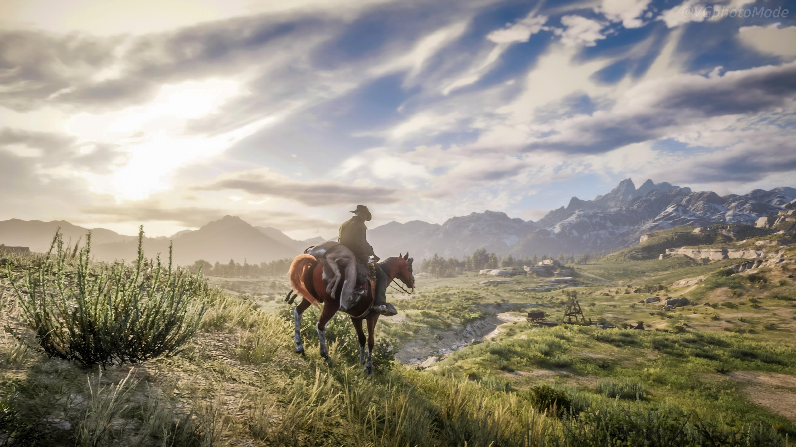
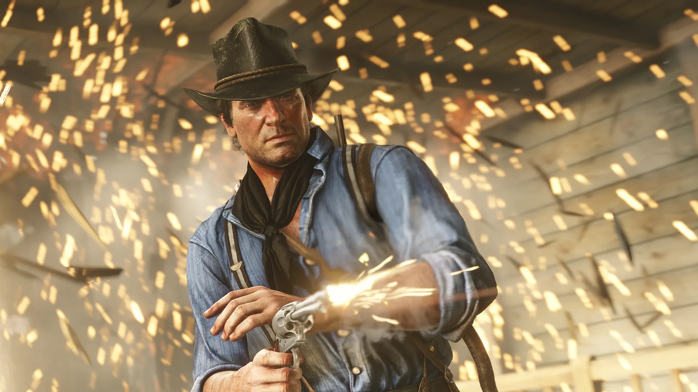

The game's development lasted over eight years, beginning soon after Red Dead Redemption's release, and it became one of the most expensive video games ever made. Rockstar co-opted all of its studios into one large team to facilitate development. They drew influence from real locations as opposed to film or art, focused on creating an accurate reflection of the time with the game's characters and world. The game was Rockstar's first built specifically for eighth-generation consoles, having tested their technical capabilities while porting Grand Theft Auto V. The game's soundtrack features an original score composed by Woody Jackson and several vocal tracks produced by Daniel Lanois. Development included a crunch schedule of 100-hour weeks, leading to reports of mandatory and unpaid overtime. Red Dead Online, the game's online multiplayer mode, lets up to 32 players engage in a variety of cooperative and competitive game modes.
Red Dead Redemption 2 was released for the PlayStation 4 and Xbox One in October 2018, and for Windows and Stadia in November 2019. It broke several records and had the second-biggest launch in the history of entertainment, generating US$725 million in sales from its opening weekend and exceeding the lifetime sales of Red Dead Redemption in two weeks. The game received critical acclaim, with praise directed at its story, characters, open world, graphics, music, and level of detail, but some criticism at its control scheme and emphasis on realism over player freedom. It won more than 175 Game of the Year awards and received multiple other accolades from awards shows and gaming publications. It is considered one of eighth-generation console gaming's most significant titles and among the greatest video games ever made. It is among the best-selling video games with over 61 million copies shipped.
The game was extensively promoted throughout the world.
Preliminary work on Red Dead Redemption 2 began shortly following the release of the original game, Red Dead Redemption (2010). Rockstar San Diego, the studio behind the original game, had a rough outline of the game by mid-2011, and by late 2012, rough scripts of the game had been completed. When Rockstar Games realized a group of distinct studios would not necessarily work, it co-opted all of its studios into one large team, presented simply as Rockstar Games, to facilitate development between 1,600 people; a total of around 2,000 people worked on the game. Analyst estimations place the game's combined development and marketing budget between US$370 million and US$540 million, which would make it one of the most expensive video games to develop.
While the main theme of the original game was to protect family at all costs, Red Dead Redemption 2 tells the story of the breakdown of a family in the form of the Van der Linde gang. The team was interested in exploring the story of why the gang fell apart, as frequently mentioned in the first game. Rockstar's Vice President of Creativity Dan Houser was inspired by film and literature when writing the game, though he avoided contemporary works to avoid being accused of stealing ideas. The team was not specifically inspired by film or art but rather real locations. The team was focused on creating an accurate reflection of the time, with people and locations. The citizens in the game feature a contrast between rich and poor, while the locales contrast between the civilization and the wilderness.
Red Dead Redemption 2's recording sessions began in 2013. Rockstar wanted a diverse cast of characters within the Van der Linde gang. The writers put particular focus on the individual stories behind each character, exploring their life before the gang and their reasons for remaining with the group. Several characters were cut from the game during development as their personalities failed to add to the narrative. The actors sometimes improvised some additional lines, but mostly remained faithful to the script. The team decided the player would control one character in Red Dead Redemption 2, as opposed to the three protagonists in Rockstar's previous title Grand Theft Auto V (2013), to follow the character more personally and understand how the events impact him. They felt a single character is more appropriate for the narrative structure of a Western.
Red Dead Redemption 2 is the first game from Rockstar built specifically for the PlayStation 4 and Xbox One. Rockstar had tested these consoles' technical capabilities when porting Grand Theft Auto V, initially released on the PlayStation 3 and Xbox 360, to them. Once the team had defined what limitations were sustainable, they found the areas requiring the most focus. One of Rockstar's goals with Red Dead Redemption 2's gameplay was to make the player feel as though they are living in a world, instead of playing missions and watching cutscenes. A method used to achieve this was through the gang's moving camp, where the player can interact with other characters. The team ensured the characters maintained the same personality and mood from cutscene to gameplay to make the world feel more alive and realistic.
Woody Jackson, who worked with Rockstar on the original game and Grand Theft Auto V, returned to compose Red Dead Redemption 2's original score. Red Dead Redemption 2 has three different types of score: narrative, which is heard during the missions in the game's story; interactive, when the player is roaming the open world or in multiplayer; and environmental, which includes campfire singing songs or a character playing music in the world. The game's music regularly reacts according to the player's decisions in the world. Jackson purchased several instruments from the Wrecking Crew featured on classic cowboy films. In total, over 110 musicians worked on the music for the game. Daniel Lanois produced the original vocal tracks for the game, collaborating with artists such as D'Angelo, Willie Nelson, Rhiannon Giddens, and Josh Homme. Director of music and audio Ivan Pavlovich engaged saxophone player Colin Stetson, experimental band Senyawa, and musician Arca to work on the score.
Rockstar Games first teased Red Dead Redemption 2 on October 16–17, 2016, before the official announcement on October 18, 2016. Originally due for release in the second half of 2017, the game was delayed twice: first to Q1/Q2 2018, and later to October 26, 2018. According to Rockstar, the game required extra development time for "polish". To spur pre-order sales, Rockstar collaborated with several retail outlets to provide special edition versions of the game. A companion app, released alongside the game for Android and iOS devices, acts as a second screen wherein the player can view in-game items such as catalogs, journals, and a real-time mini-map. The game was released for Windows on November 5, 2019, and was a launch title for Stadia when the service launched on November 19, 2019. The Windows version has visual and technical improvements.
Several critics considered Red Dead Redemption 2's open world among the greatest in video games; EGM's Plessas said it "pushes industry boundaries in both size and detail", and The Guardian's MacDonald praised the imitation of real American landscapes.Red Dead Redemption 2 had the largest opening weekend in entertainment history, making over US$725 million in revenue in three days, and over 17 million copies shipped in two weeks, exceeding the lifetime sales of Red Dead Redemption. Additionally, Red Dead Redemption 2 was the second-highest-grossing entertainment launch (behind Grand Theft Auto V) and set records for largest pre-orders, first-day sales, and three-day sales on the PlayStation Network. The share price for Rockstar's parent company, Take-Two Interactive, rose nine percent in the week after release.
Critics agreed Red Dead Redemption 2 was among the best games of the eighth generation of video game consoles. GQ's White described it as "a generation-defining release", and VG247's McKeand named it "a benchmark for other open world games to aspire to". IGN ranked the game as the third-best Xbox One game and eleventh-best PC and PlayStation 4 game. In November 2020, TechRadar listed it among the greatest games of the eighth generation; editor Gerald Lynch felt it set the bar for believable open world games. In December, GamesRadar+ ranked it the fifth-best game of the generation, noting it had already begun to influence the open-world and role-playing genres.